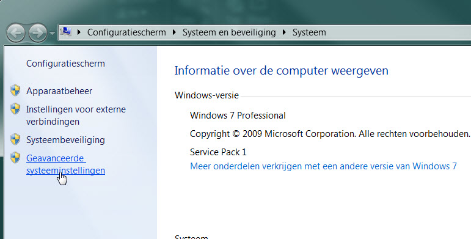
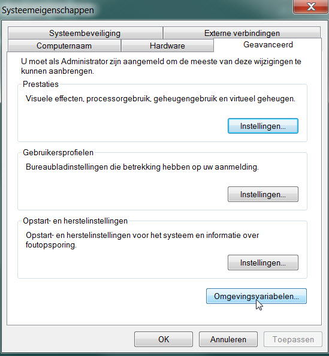
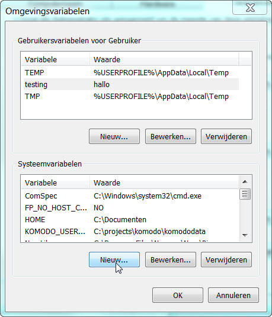
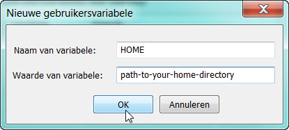

Configure environment variables
For some grammars and for some configure tricks in the configure program (not the config GUI though) you can use environment variables.
The most important one is HOME, also the shorthand notation ~ is used.
- When HOME is not set explicitly, the value of PERSONAL is taken, on my system for example pointing to "C:\Users\Quintijn\Documents"
Setting your HOME variable- When you want to set HOME to a user independent directory, you need to set the HOME environment variable, see below (the pictures are from a Dutch Windows 7 computer):
- Go to the System properties (Press Windows+Break key):

- Click on Advanced Settings and in the next dialog click on Environment variables

- Note HOME can be configured already, like in this example:

- If it is not, click on New, and edit like:

Now you can, probably after a restart of Dragon, use ~ or %HOME% for your HOME directory! |